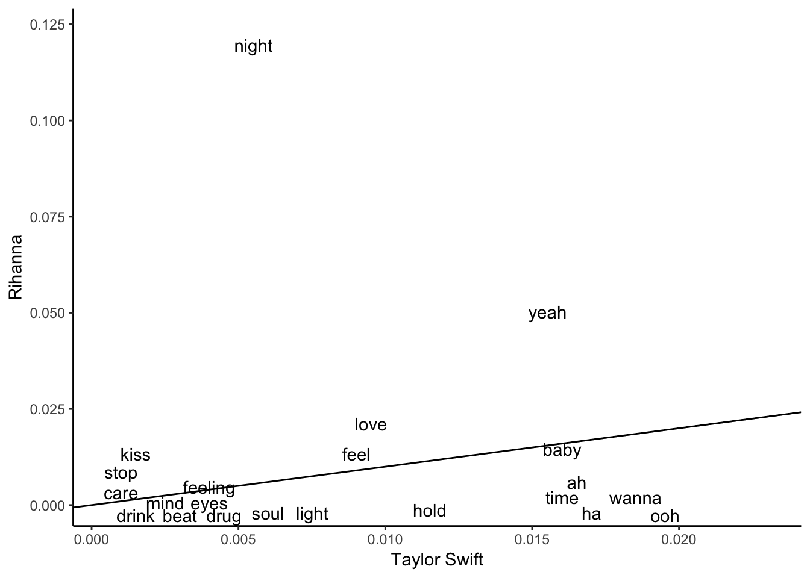
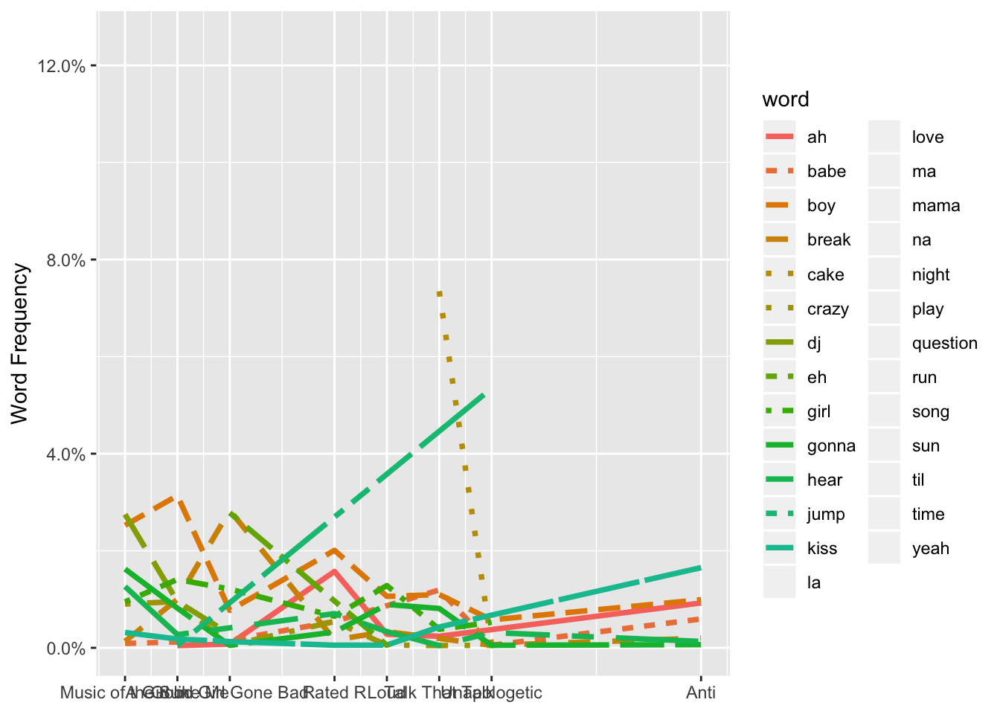

#if (!require("devtools")) install.packages("devtools")
#install.packages("devtools")
#devtools::install_github("josiahparry/geniusR")if (!require("geniusR")) install.packages("geniusR")## Loading required package: geniusRlibrary(geniusR)
if (!require("tidyverse")) install.packages("tidyverse")
library(tidyverse)swift = genius_album(artist = "Taylor Swift", album = "Reputation")## Joining, by = c("track_title", "track_n", "track_url")riri = genius_album(artist = "Rihanna", album = "Anti")## Joining, by = c("track_title", "track_n", "track_url")library(tidytext)
tidy_swift = swift %>%
unnest_tokens(word, lyric) %>%
anti_join(stop_words) %>%
count(word, sort = TRUE)## Joining, by = "word"tidy_riri = riri %>%
unnest_tokens(word, lyric) %>%
anti_join(stop_words) %>%
count(word, sort = TRUE)## Joining, by = "word"tidy_swift = tidy_swift %>%
rename(swift_n = n) %>%
mutate(swift_prop = swift_n/sum(swift_n))
tidy_riri = tidy_riri %>%
rename(riri_n = n) %>%
mutate(riri_prop = riri_n/sum(riri_n))compare_words = tidy_swift %>%
full_join(tidy_riri, by = "word")
summary(compare_words)## word swift_n swift_prop riri_n
## Length:971 Min. : 1.000 Min. :0.00047 Min. : 1.000
## Class :character 1st Qu.: 1.000 1st Qu.:0.00047 1st Qu.: 1.000
## Mode :character Median : 1.000 Median :0.00047 Median : 1.000
## Mean : 3.208 Mean :0.00152 Mean : 3.446
## 3rd Qu.: 3.000 3rd Qu.:0.00142 3rd Qu.: 3.000
## Max. :81.000 Max. :0.03826 Max. :186.000
## NA's :311 NA's :311 NA's :532
## riri_prop
## Min. :0.0007
## 1st Qu.:0.0007
## Median :0.0007
## Mean :0.0023
## 3rd Qu.:0.0020
## Max. :0.1229
## NA's :532ggplot(compare_words, aes(swift_prop, riri_prop)) +
geom_abline() +
geom_text(aes(label=word), check_overlap = TRUE, vjust=1.5) +
labs(y="Rihanna", x="Taylor Swift") + theme_classic()## Warning: Removed 843 rows containing missing values (geom_text).
if (!require("rvest")) install.packages("rvest")## Loading required package: rvest## Loading required package: xml2##
## Attaching package: 'rvest'## The following object is masked from 'package:purrr':
##
## pluck## The following object is masked from 'package:readr':
##
## guess_encodinglibrary(rvest)
riridisc = 'https://en.wikipedia.org/wiki/Rihanna_discography'
disc <- riridisc %>%
read_html() %>%
html_nodes(xpath = '//*[@id="mw-content-text"]/div/table[2]') %>%
html_table(fill = TRUE)
ririAlbums = disc[[1]]TS_albums <- ririAlbums[2:9,1:2] %>%
separate(`Album details`, c("Released","Month","Day","Year"),
extra='drop') %>%
select(c("Title","Year"))
TS_albums$Year<-as.numeric(TS_albums$Year)riri_lyrics = TS_albums %>%
mutate(tracks = map2("Rihanna", Title, genius_album))## Joining, by = c("track_title", "track_n", "track_url")
## Joining, by = c("track_title", "track_n", "track_url")
## Joining, by = c("track_title", "track_n", "track_url")
## Joining, by = c("track_title", "track_n", "track_url")
## Joining, by = c("track_title", "track_n", "track_url")
## Joining, by = c("track_title", "track_n", "track_url")
## Joining, by = c("track_title", "track_n", "track_url")
## Joining, by = c("track_title", "track_n", "track_url")riri_lyrics = riri_lyrics %>%
unnest(tracks)library(tidytext)
tidy_riri <- riri_lyrics %>%
unnest_tokens(word, lyric) %>%
anti_join(stop_words)## Joining, by = "word"tidy_riri %>%
count(word, sort=TRUE)## # A tibble: 2,225 x 2
## word n
## <chr> <int>
## 1 love 652
## 2 yeah 484
## 3 baby 399
## 4 boy 260
## 5 night 250
## 6 wanna 235
## 7 ya 215
## 8 na 187
## 9 la 158
## 10 cake 155
## # ... with 2,215 more rowswords_by_year <- tidy_riri %>%
count(Year, word) %>%
group_by(Year) %>%
mutate(time_total = sum(n)) %>%
group_by(word) %>%
mutate(word_total = sum(n)) %>%
ungroup() %>%
rename(count = n) %>%
filter(word_total > 50)
nested_words <- words_by_year %>%
nest(-word)
word_models <- nested_words %>%
mutate(models = map(data, ~glm(cbind(count, time_total) ~ Year, .,
family = "binomial")))library(broom)
slopes <- word_models %>%
unnest(map(models, tidy)) %>%
filter(term == "Year") %>%
mutate(adjusted.p.value = p.adjust(p.value))
top_slopes <- slopes%>%
filter(adjusted.p.value < 0.1) %>%
select(-statistic, -p.value)library(scales)##
## Attaching package: 'scales'## The following object is masked from 'package:purrr':
##
## discard## The following object is masked from 'package:readr':
##
## col_factorwords_by_year %>%
inner_join(top_slopes, by = "word") %>%
ggplot(aes(Year, count/time_total, color = word, lty = word)) +
geom_line(size = 1.3) +
labs(x = NULL, y = "Word Frequency") +
scale_x_continuous(breaks=TS_albums$Year,
labels=TS_albums$Title) +
scale_y_continuous(labels=scales::percent)